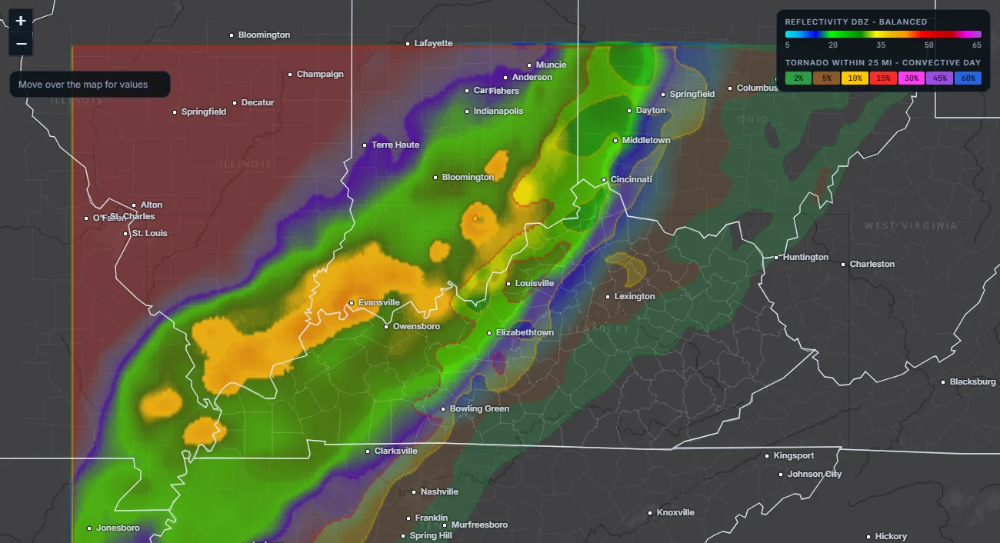
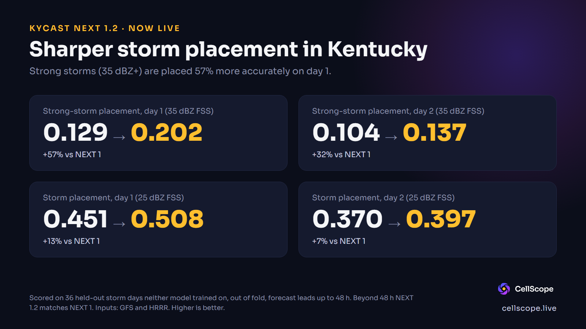

KyCast
KyCast NEXT 1.2: our own small trained model. It reads NOAA's GFS weather fields, plus HRRR for the first 48 hours, and produces a Kentucky reflectivity and tornado-chance outlook out to 60 hours (the next 1-3 days). On our held-out test days it beats NEXT 1 on every row we scored. The live viewer shows the most recent published run and warns when it is out of date.
KyCast NEXT 1.2 trailer (24 seconds).

The viewer, showing a past case (GFS cycle 2025-04-01 00Z, valid 2025-04-02). It illustrates the interface, not skill: the case may have been in the training data.
KyCast is not a GFS map and not a rerun of GFS. It is a separate neural network we trained. It uses coarse GFS fields (plus HRRR, for the first 48 hours, and the previous run, for calibration) as its starting data and produces its own 3 km (0.03 degree) grid over Kentucky and its neighbours (35.0-40.5 N, 91.0-80.4 W). The outlook runs 60 hours in 3-hour steps and carries a reflectivity layer and a tornado-chance layer. The viewer shows reflectivity, tornado chance (3-hour or convective-day), the chance of 35+ dBZ and raw GFS, labelled as GFS, for comparison on one synced timeline.
A full run is under 1 MB. Once the GFS data is downloaded, running the network for a whole forecast took about 2 seconds; the download dominates.
What is new in NEXT 1.2
NEXT 1 looked only at GFS. NEXT 1.2 also reads HRRR, a high-resolution short-range model, for the first 48 hours of a run. HRRR sees radar-scale detail that GFS smooths over, so it helps most when a storm is a day or less away. Past 48 hours, and for the previous run used in calibration, NEXT 1.2 uses the same method as NEXT 1, so those hours are unchanged. If an HRRR file is missing for a step, that step quietly falls back to NEXT 1.
How it was checked
On 36 whole days neither model trained on (19 had tornadoes in the grid), against observed MRMS radar and SPC tornado reports. Calibration was fitted on some days and scored on others ("out of fold"). The reflectivity rows use the 468 forecasts with a lead of 48 hours or less. Brier skill is measured against climatology: above 0 beats always forecasting the base rate. The fractions skill score (FSS) asks whether storms were placed in about the right area, allowing a small miss; 1 is perfect.
Daily tornado chance (within 25 miles, 12Z-12Z day). Reliability chart for NEXT 1; NEXT 1.2 uses the same calibration method, refitted, and its chart has not been redrawn.
How to read it: each dot is a group of forecasts that gave about the same chance. Across is the chance KyCast gave; up is how often a tornado really happened in that group. The closer a dot sits to the dashed line, the more honest the percentage. For example, when it said about 15% (the most it will say), tornadoes showed up about 26% of the time, so the top end is cautious. Numbers beside the dots are how many forecasts are in each group (K = thousand, M = million).
NEXT 1.2 versus NEXT 1
Same 36 test days for both models. Higher is better in every row.
| Measure | NEXT 1 | NEXT 1.2 | Change |
|---|---|---|---|
| Storm placement (FSS), 25 dBZ, day 1 | 0.451 | 0.508 | +0.057 |
| Storm placement (FSS), 25 dBZ, day 2 | 0.370 | 0.397 | +0.027 |
| Storm placement (FSS), 35 dBZ, day 1 | 0.129 | 0.202 | +0.073 |
| Storm placement (FSS), 35 dBZ, day 2 | 0.104 | 0.137 | +0.033 |
| Probability (Brier skill), 25 dBZ, day 1 | 0.173 | 0.201 | +0.028 |
| Probability (Brier skill), 25 dBZ, day 2 | 0.124 | 0.139 | +0.015 |
| Probability (Brier skill), 35 dBZ, day 1 | 0.028 | 0.037 | +0.009 |
| Probability (Brier skill), 35 dBZ, day 2 | 0.019 | 0.025 | +0.006 |
| Daily tornado chance (Brier skill), day 1 | 0.105 | 0.111 | +0.006 |
| Daily tornado chance (Brier skill), day 2 | 0.100 | 0.107 | +0.007 |
How to read it: the biggest gains are in where strong storms (35 dBZ and up) are placed on day 1. The probability gains are smaller, and the tornado gains are within noise on 19 tornado days, so we do not claim them. Day 1 and day 2 are the first and second 24 hours after the run.

Storm placement, NEXT 1 versus NEXT 1.2. More detail in Issue 4.
Honest limits
- The test was small. 36 held-out days (468 scored forecasts for the first 48 hours), and only 19 of the days had tornadoes. That is enough to compare two models, not to promise how any one day will go.
- We cap the top end. A daily tornado chance is never shown above 15%. On the test days, the group shown as 15% saw tornadoes about 26% of the time, so the cap is cautious. We have not raised it, because 19 tornado days is too few to trust a higher number.
- No new comparison with raw GFS. When we last checked, for NEXT 1, raw GFS still scored higher on day 1 (FSS 0.46 versus 0.43 at 25 dBZ) and the two were level on day 2. We have not re-run that comparison for NEXT 1.2, so we cannot say whether the gap has closed. What KyCast adds is calibrated probabilities.
- Short range only. KyCast is built for the next 1-2 days and forecasts only to 60 hours. HRRR helps only in the first 48; after that NEXT 1.2 is the same as NEXT 1. It shows where storms are possible, not which cell will do what.
- The reflectivity is derived, not simulated. It is built from probabilities, not from a physics model of the atmosphere.
- Narrow training. It learned from a limited set of days (2021-2026, 4,832 training samples for NEXT 1.2, scored against observed MRMS radar) and one GFS version as input. We do not know how it behaves in weather patterns it has not seen.
- No head-to-head with HRRR forecasts yet. NEXT 1.2 uses HRRR as an input, but we have not compared its output with HRRR's own forecasts, so we cannot say how it ranks against them.
- Experimental. This is not an official forecast. Please do not use it for safety decisions.
Data: NOAA GFS, HRRR and MRMS radar (NOAA open data on AWS), Storm Prediction Center storm reports, Esri basemap tiles in the screenshot. Not affiliated with or endorsed by any of them.